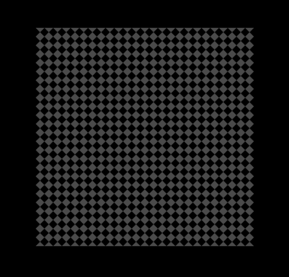

initialize
In this method you can initialize your scene as well as loading documents or resources.prepareVisualIn this method you can prepare/create your visual objects. Like Sprites, Texts, In-Game UI, etc. If this method is called, all requested resources and documents are loaded. You can trigger the load of additional resources in this method too, in that case, this method is called again once these resources are loaded.prepareData
In this method you can prepare your non-visual objects, loading resources, etc. If this method is called, all documents requested in initialize method are loaded. You can load additional documents in this method too, in that case, this method is called again once these documents are loaded.
updateContent
This method is called once per frame. You can move your objects on screen here or do animations.
Display a red square on screen
To check if your test bed is really working, we will now change our code a little bit to show a red square on the screen. Doesn't sound like an amazing thing, but in later chapters of this guide we will do a lot more.
Since a red square counts as a visual object on screen, we have to change the prepareVisual method so that it looks like this:
###*
* Prepares all visual game object for the scene.
###
prepareVisual: ->
# Create a new quad graphic object.
@quad = new gs.Quad(Graphics.viewport)
# Setup the size of the rectangle
@quad.rect.width = 100
@quad.rect.height = 100
# Setup the position on screen. We make it centered.
@quad.rect.x = (Graphics.width - @quad.rect.width) / 2
@quad.rect.y = (Graphics.height - @quad.rect.height) / 2
# Set the color of the rectangle.
@quad.color.set(255, 0, 0, 255)
# We are done with preparing our visual objects. So we can start
# the screen transition to fade in our new created objects smoothly.
@transition()
If you play your game now, you will see a red square in the center of the screen. We are using the gs.Quad class here which is part of the Basic Engine. You can read more about gs.Quad in the

Engine API documentation.
Important is also the last line where the transition method is called. That is necessary because in prepareVisual, the screen is frozen, so no matter what kind of changes we are doing, we will see nothing until we unfreeze the screen. To avoid that this unfreeze happens instantly but smoothly instead, we are calling transition() which will unfreeze and fade-in our new created red square smoothly.
Feel free to change this example, you can take a look into the Engine API documentation and play around with other visual objects.
HTML
prites are graphic objects used to display bitmaps and videos on screen. There are different kind of sprites for different purposes, we will go through them step by step. If you are more interested in how to display videos, check out the
Videos
chapter.
Regular Sprites

Regular sprites are gs.Sprite objects which are used to display a bitmap on screen. They are the most common kind of sprites. It is possible to add certain effects like rotation, zooming, tinting, etc. as we can see in the following example

###* * Prepares all visual game object for the scene. ### prepareVisual: -> # Create a new sprite object to show our bitmap on screen. @sprite = new gs.Sprite(Graphics.viewport) # Assign our bitmap to the sprite to display it on screen @sprite.bitmap = @bitmap # Setup the position on screen. We make it centered. @sprite.x = (Graphics.width - @bitmap.width) / 2 @sprite.y = (Graphics.height - @bitmap.height) / 2 # Define the portion of the bitmap we want to display on screen. @sprite.srcRect = new gs.Rect(0, 0, @bitmap.width, @bitmap.height) # Set the anchor-point to the center of the sprite so that rotation and zooming # are done around the center of the sprite and not the top-left corner. @sprite.anchor.x = 0.5 @sprite.anchor.y = 0.5 # Set rotation angle to 45 degree. @sprite.angle = 45 # Set vertical and horizontal zoom-level to 50% (0.5). @sprite.zoomX = 0.5 @sprite.zoomY = 0.5 # Change the color-tone to reach a sepia-like tint. @sprite.tone.set(35, -35, -70, 255) # We are done with preparing our visual objects. So we can start # the screen transition to fade in our new created objects smoothly. @transition() ###* * Prepares all data for the scene and loads the necessary graphic and audio resources. ### prepareData: -> # Load the background image "Bench_Morning". @bitmap = ResourceManager.getBitmap("Graphics/Backgrounds/Bench_Morning")
As we can see in that example, it is very easy to rotate, zoom or tint a sprite. We just need to set the corresponding properties of the sprite object.
Tiling Sprites
A regular sprite only displays it's assigned bitmap one time but a tiling sprite, as the name suggests, tiles the assigned bitmap over the screen or a defined area. It is useful for in-game UI decorations such as in-game window backgrounds and other stuff..
###* * Prepares all visual game object for the scene. ### prepareVisual: -> # Create a new tiling sprite object to tile our bitmap over a defined # area on screen. @sprite = new gs.TilingSprite(Graphics.viewport) # Assign our bitmap to the sprite to tile it. @sprite.bitmap = @bitmap # Setup the position and size on screen. We make it centered with a size of # 400x400 pixels. The assigned bitmap is tiled over that area. @sprite.rect.x = (Graphics.width - 400) / 2 @sprite.rect.y = (Graphics.height - 400) / 2 @sprite.rect.width = 400 @sprite.rect.height = 400 # Define the portion of the bitmap we want to tile. @sprite.srcRect = new gs.Rect(0, 0, @bitmap.width, @bitmap.height) # We are done with preparing our visual objects. So we can start # the screen transition to fade in our new created objects smoothly. @transition() ###* * Prepares all data for the scene and loads the necessary graphic and audio resources. ### prepareData: -> # Load the image "skin-tile", useful for in-game UI. @bitmap = ResourceManager.getBitmap("Graphics/Pictures/skin-tile")

As we can see in the above code, we are using gs.TilingSprite now. It supports almost the same kind of settings as a regular sprite. The main difference is that we have to define a rectangular area instead of just specifying a position. The assigned bitmap will be tiled over that rectangular area. The result will look like this:

We get a 400x400 pixel area centered on screen. If we look at the original bitmap:
We can see that our bitmap is now tiled on not just displayed once.

Tiling Planes
A tiling plane, represented by gs.TilingPlane class, is very similar to a tiling sprite, the main differences are
It has no rectangular area but x- and y-coordinate instead like a regular sprite
It is always tiled over the entire screen, but it can be controlled via clip-rects.